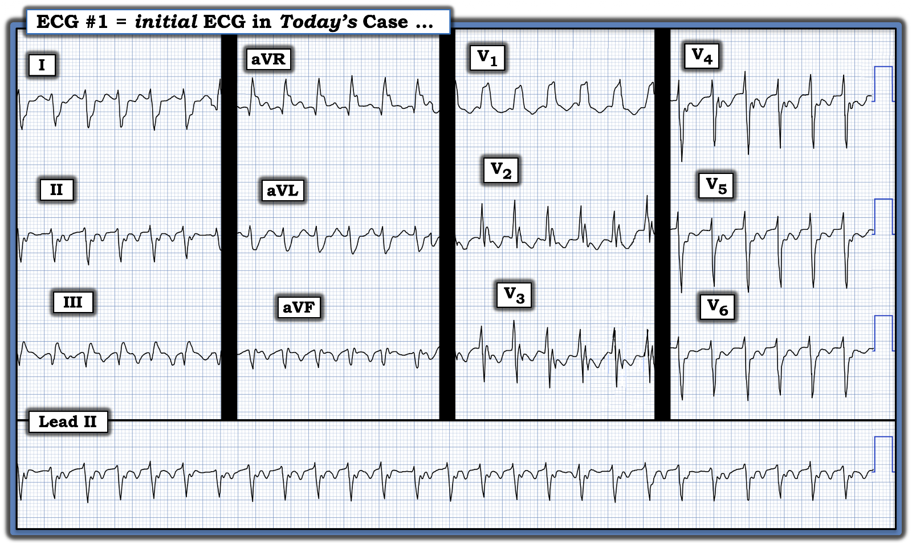
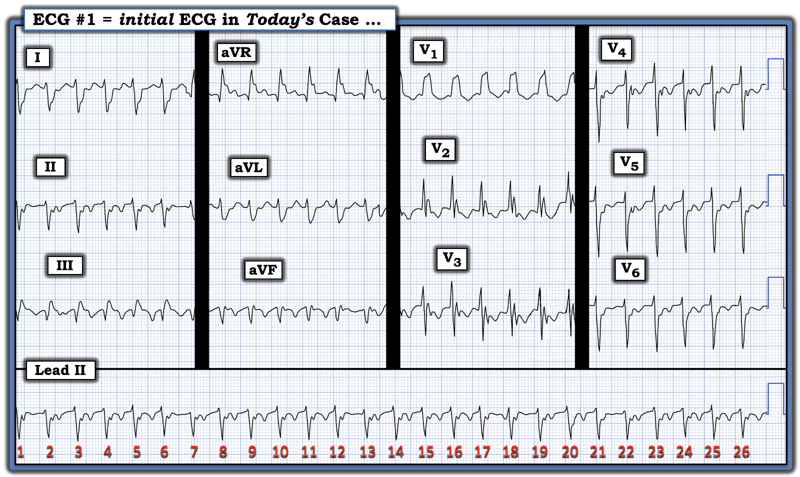
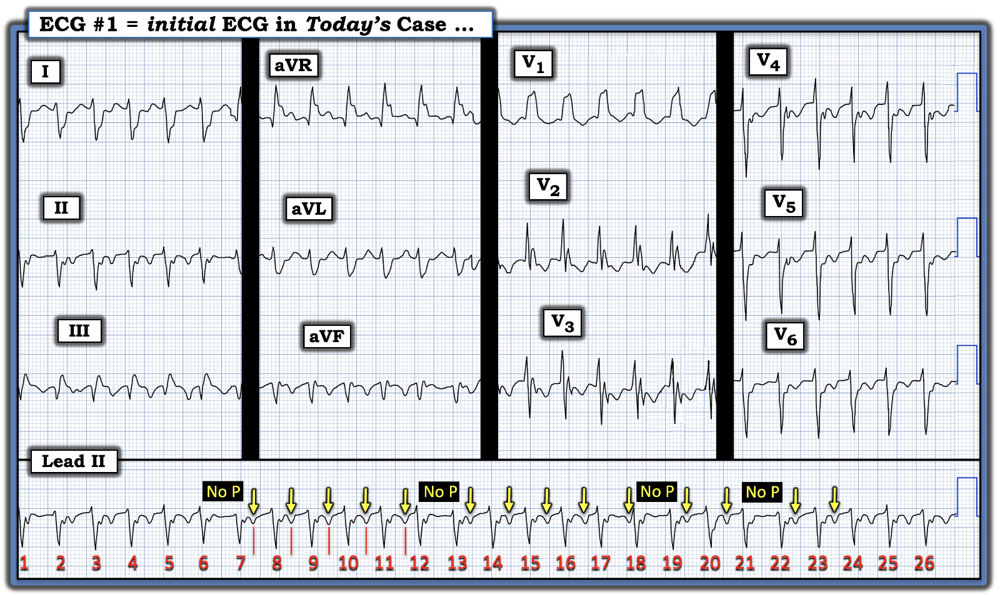
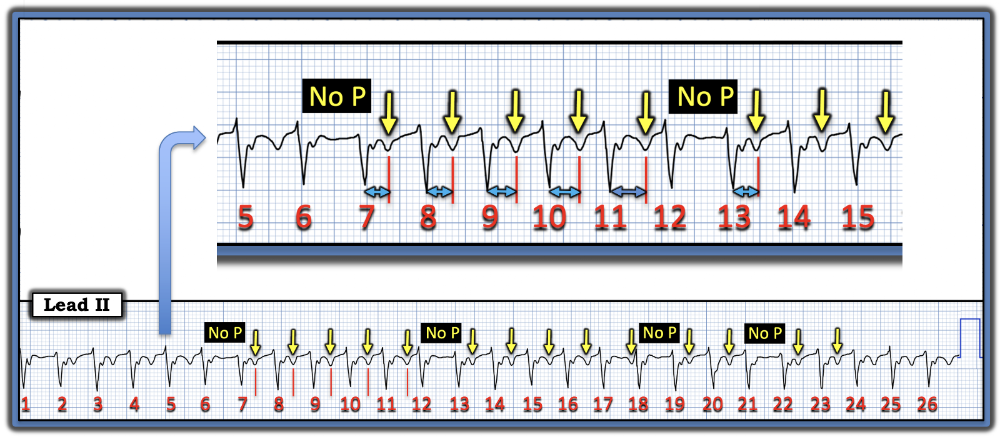
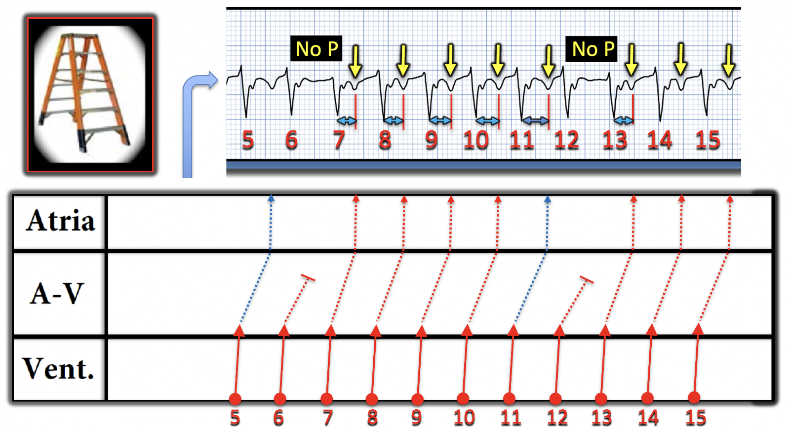
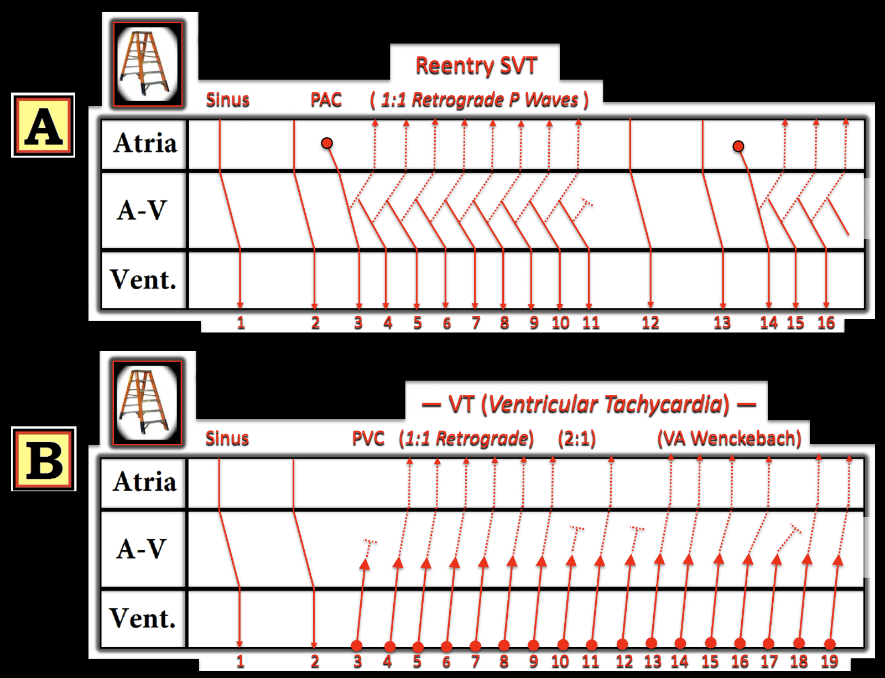

ECG Blog #538 — Một dấu hiệu bất thường
Điện tâm đồ ở Hình 1 được ghi từ một người trưởng thành than phiền thường xuyên “hồi hộp đánh trống ngực”. Hãy giả định là không có bệnh sử nào.
Hãy chọn câu trả lời ĐÚNG NHẤT về nhịp ở Hình 1:
- a) Xác suất là VT khoảng ~50%.
- b) Xác suất là VT khoảng ~75%.
- c) Xác suất là VT gần như 100%.
- d) Nhịp này là một SVT vào lại (tức AVNRT hoặc AVRT) kèm dẫn truyền lệch hướng.
- e) Nhịp này là cuồng nhĩ (AFlutter) với dẫn truyền AV 2:1.


SUY NGHĨ BAN ĐẦU CỦA TÔI:
Nhịp ở Hình 1 là một nhịp nhanh QRS rộng đều WCT (Wide-Complex Tachycardia) với tần số ~160/phút, không thấy rõ dấu hiệu sóng P xoang.
- Như mọi khi, phải nghĩ đến chẩn đoán VT cho đến khi chứng minh được điều ngược lại — bất cứ khi nào bạn gặp một nhịp WCT đều mà không thấy rõ dấu hiệu sóng P xoang.
Các yếu tố khác ủng hộ VT gồm:
- Trục mặt phẳng trán trong lúc có nhịp WCT là trục không xác định (chủ yếu âm, nhưng không âm hoàn toàn ở cả chuyển đạo I và aVF). Mức độ lệch trục mặt phẳng trán này ủng hộ VT — vì nó không phù hợp với dẫn truyền kiểu LAHB (Left Anterior HemiBlock – blốc phân nhánh trái trước) lẫn LPHB (Left Posterior HemiBlock – blốc phân nhánh trái sau). Tuy vậy, vì trục mặt phẳng trán không “lệch cực độ” (tức là không âm hoàn toàn ở chuyển đạo I hay aVF) — mức độ lệch trục này gợi ý nhưng không chẩn đoán xác định VT (Xem Quy tắc #1 và Bảng 2 trong ECG Blog #42-bis, cùng nhiều ví dụ khác trong ECG Blog của tôi về trục lệch "cực độ" như một dấu hiệu của VT).
- Hình dạng QRS ở chuyển đạo V1 dương hoàn toàn, nhưng không có hình dạng rõ rệt (tức là hoàn toàn không có hình dạng rsR’ ba pha đặc trưng của dẫn truyền kiểu RBBB). Dù hình ảnh ở V1 này không loại trừ hoàn toàn dẫn truyền kiểu RBBB (do blốc nhánh có sẵn từ trước hoặc do dẫn truyền lệch hướng liên quan tần số) — hình dạng QRS này quả thật phần nào ủng hộ VT (theo Hình 2 trong ECG Blog #42-bis). Tuy vậy, quả là có sóng S tận rộng ở các chuyển đạo bên trái I và V6 — và sóng r dương ở chuyển đạo V6 đủ lớn để vẫn có thể là dẫn truyền kiểu RBBB (tức là hình dạng QRS ở Hình 1 gợi ý nhưng không chẩn đoán xác định VT).
- ĐIỀU CỐT LÕI: Ở thời điểm này của quá trình đánh giá — chúng ta chưa có câu trả lời dứt khoát. Khi không biết tuổi bệnh nhân, không nắm được tiền sử bệnh của bệnh nhân (tức là Có tiền sử bệnh tim nền nào không?) — và không có điện tâm đồ trước đó để có thể cho thấy QRS giãn rộng tương tự khi đang ở nhịp xoang — chúng ta chỉ còn dựa vào thực tế thống kê là phần lớn rõ rệt các nhịp WCT đều có đặc điểm hình dạng không điển hình và không thấy rõ dấu hiệu sóng P xoang (như trường hợp ở Hình 1) — nhiều khả năng là VT (dù một số nhịp WCT đều như vậy rốt cuộc sẽ là nhịp trên thất).
- Nhìn lại các phương án trả lời đưa ra ở đầu bài hôm nay — lựa chọn ĐÚNG NHẤT có vẻ là b) Xác suất là VT khoảng ~75%.
NHƯNG — Còn Một Manh Mối Quan Trọng Nữa!
- GỢI Ý #1: Manh mối MẤU CHỐT mà tôi chưa nhắc tới này cho biết đáp án không phải là lựa chọn "b" — mà là một lựa chọn khác. Manh mối MẤU CHỐT này liên quan đến hoạt động nhĩ.
Hãy NHÌN LẠI bản ghi hôm nay ở Hình 2:
- GỢI Ý #2: Vì sao tôi đánh số các nhát ở Hình 2?


=================================
Trả lời: Manh mối từ hoạt động nhĩ ...
Hóa ra hoạt động nhĩ có hiện diện trong bản ghi hôm nay — dưới dạng các sóng P ngược dòng (được đánh dấu bằng các mũi tên VÀNG ở Hình 3).


Sóng P ngược dòng:
Sóng P ngược dòng thường biểu hiện là một khía âm hoặc một biến thiên âm xuất hiện sau QRS ở một hoặc nhiều chuyển đạo thành dưới (tức là sóng P âm ở các chuyển đạo thành dưới cho thấy sự khử cực nhĩ đang đi ra xa thay vì hướng về nút AV).
- ĐIỂM THEN CHỐT (PEARL) #1: Phát hiện phân ly nhĩ thất trong một nhịp WCT đều là manh mối quan trọng cho thấy nhịp WCT đều đó là VT (như đã trình bày trong ECG Blog #133). Nhưng dẫn truyền thất-nhĩ (VA) 1:1 (ngược dòng) ổn định thì không phải là "phân ly" nhĩ thất — vì khi đó, mỗi sóng P có liên hệ với phức bộ QRS kế cận (tức là qua một khoảng RP' hằng định). Cả VT lẫn các nhịp SVT vào lại đều có thể biểu hiện dẫn truyền VA 1:1 ổn định — vì vậy việc phát hiện dẫn truyền VA 1:1 trong một nhịp WCT đều không giúp ích gì cho việc phân biệt VT với một nhịp SVT (Xem ECG Blog #240 — để đọc bàn luận đầy đủ về vai trò của hoạt động nhĩ ngược dòng 1:1 ổn định trong việc duy trì các nhịp SVT vào lại AVRT và AVNRT).
- ĐIỂM THEN CHỐT (PEARL) #2: Ở Hình 3, chúng ta không thấy dẫn truyền VA 1:1 ổn định — vì sóng P ngược dòng không xuất hiện sau mọi phức bộ QRS (tức là không thấy sóng P ngược dòng sau QRS của các nhát #6, 12, 18 và 21 ở Hình 3).
Xem kỹ hơn hoạt động ngược dòng trong ca hôm nay ...
Để thấy rõ hơn bản chất của hoạt động nhĩ ngược dòng trong bản ghi hôm nay — tôi đã phóng to ở Hình 4 một đoạn trích gồm các nhát #5 đến 15 từ Hình 3.
- Bạn có nhận ra điều gì đang xảy ra với khoảng RP' sau các nhát #7 đến 12 không?


Minh họa bằng giản đồ bậc thang:
Giản đồ bậc thang (laddergram) của tôi ở Hình 5 cho thấy theo sơ đồ rằng khoảng RP' dài dần khi đi từ nhát #7 đến nhát #11 (các đường chấm ĐỎ sau những nhát này) — cho đến khi không còn sóng P ngược dòng sau nhát #12.
- Dẫn truyền ngược dòng tái lập sau khoảng ngưng ngắn giữa nhát #12-13 — tuy một lần nữa lại với khoảng RP' ngược dòng ngắn hơn sau nhát #13.
- ĐIỂM THEN CHỐT (PEARL) #3: Trong giản đồ bậc thang ở Hình 5 — các mũi tên VÀNG biểu thị sóng P ngược dòng. Dù tinh tế, khoảng RP' đang dài ra. Điều này dễ nhận thấy nhất khi nhìn vào khoảng RP' ngay trước khi dẫn truyền Wenckebach ngược dòng bị blốc (các mũi tên hai đầu màu XANH đậm hơn trên dải nhịp sau nhát #11). Hãy lưu ý ở Tầng Nút AV sự tăng tinh tế của góc dẫn truyền sóng P ngược dòng, đạt tối đa ngay trước khi sóng P bị rớt (đường chấm XANH ở Tầng Nút AV). Và rồi, sau khoảng ngưng ngắn giữa nhát #12-13 — chu kỳ Wenckebach bắt đầu lại với khoảng RP' ngắn lại sau nhát #13.


=================================
Ý nghĩa của dẫn truyền ngược dòng từng lúc
Ở Hình 6 — tôi đã vẽ các giản đồ bậc thang lý thuyết để minh họa vì sao sự hiện diện của dẫn truyền ngược dòng từng lúc mà không làm xáo trộn tính đều của một nhịp WCT thì gần như chẩn đoán xác định VT (Roig và cs. — Circulation 153(15):1171-1173, 2026 — và — Pilecky và cs. — Eur Heart J 7:1-2, 2023).
- Ô A (Giản đồ bậc thang phía trên ở Hình 6) — Một PAC (nhát #3) xuất hiện sau 2 nhát xoang bình thường. Nếu thời điểm "vừa khớp" — PAC này có thể khởi phát một nhịp SVT vào lại (thường là AVNRT hoặc AVRT). Nhưng vì các nhịp SVT vào lại phụ thuộc vào việc dẫn truyền ngược dòng liên tục (các đường chấm trong cơn SVT từ nhát #3 đến 11) — SVT vào lại sẽ kết thúc đột ngột nếu vì bất kỳ lý do gì dẫn truyền ngược dòng thất bại (như xảy ra ở giản đồ bậc thang lý thuyết này sau nhát #11).
- Ô B (Giản đồ bậc thang phía dưới ở Hình 6) — Sau 2 nhát xoang, một loạt VT bắt đầu từ nhát #3. Tôi đã vẽ một vài khả năng khác nhau với các tỷ lệ dẫn truyền VA khác nhau. Ở Ô B phải thấy rõ rằng dù dẫn truyền VA 1:1 được duy trì (như từ nhát #4 đến 9) — hay từng lúc với tỷ lệ dẫn truyền VA 2:1 (như từ nhát #9 đến 12) — hay biểu hiện dẫn truyền Wenckebach ngược dòng với RP' dài dần cho đến khi dẫn truyền ngược dòng thất bại (như xảy ra từ nhát #13 đến 17) — thì tính đều của nhịp VT vẫn không bị ảnh hưởng! Điều này chứng minh rằng hoạt hóa thất độc lập với hoạt động nhĩ — qua đó về cơ bản xác nhận VT bằng cách loại trừ khả năng một SVT vào lại vốn phụ thuộc vào việc duy trì dẫn truyền ngược dòng qua một vòng vào lại.


=================================
SUY NGHĨ CUỐI CÙNG về CA BỆNH hôm nay:
Blốc từng lúc của dẫn truyền ngược dòng trong một nhịp WCT đều (dù do Wenckebach ngược dòng hay hiện tượng dẫn truyền VA từng lúc khác) — không phải là điều thường gặp. Đây là một khái niệm nâng cao mà bạn sẽ không hay gặp. Nhưng nó có xảy ra (như trong ca hôm nay) — và bạn có thể phát hiện được nếu chủ động tìm.
- Quay lại Hình 1 (và Hình 3) — việc nhịp WCT trong ca hôm nay duy trì tần số thất đều bất chấp việc không dẫn truyền ngược dòng ở mọi nhát về cơ bản đã chứng minh rằng nhịp WCT này là VT bền bỉ (ngoại lệ hiếm hoi duy nhất là khả năng một nhịp nhanh bộ nối QRS rộng có dẫn truyền ngược dòng).
Về mặt lâm sàng — manh mối tinh tế nhưng giàu thông tin này về dẫn truyền ngược dòng từng lúc trong một nhịp WCT đều thường sẽ không cần thiết để quyết định xử trí ban đầu tối ưu.
- Lý do là NẾU bệnh nhân đang có nhịp WCT đều không có sóng P xoang mà huyết động không ổn định — thì sẽ cần sốc điện chuyển nhịp bất kể nhịp đó là VT hay SVT.
- Ngược lại, NẾU bệnh nhân có nhịp WCT đều ổn định — thì thử điều trị bằng thuốc là hợp lý. Và, nếu bạn nhận ra dẫn truyền ngược dòng từng lúc trong khi nhịp WCT vẫn đều — thì tôi sẽ bỏ qua việc thử Adenosine, vì khi đó chúng ta đã biết nhịp WCT đó là VT.
==================================
Lời cảm ơn: Xin cảm ơn Khaled Elashiq, Hasan Al-Qassim và Mahmoud Al-Rahmoun (từ Syria) đã đóng góp ca bệnh này.
==================================